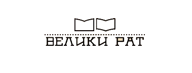

Тематске збирке
|
|
Процват писмености
Кроз пројекат Процват писмености, дванаест партнерских институција
културе из десет зeмаља Европе, заједно са Европеаном, представља
развој писмености на старом континенту од 4. до 20. векa путем
дигиталних збирки. Народна библиотека Србије, као партнер у овом
пројекту, кроз 11 дигиталних збирки осликава ширење писане речи на
нашим просторима и слави српски језик.
|
|
|
Миграције кроз науку и уметност
Путем пројекта Миграције кроз науку и уметност, шест партнерских
институција културе из шест земаља Европе, заједно са Европеаном,
представља документе који сведоче о кретањима људи у, низ и кроз
Европу. Народна библиотека Србије, као партнер у овом пројекту, кроз
три дигиталне збирке дели три различите приче о миграцијама на
нашим просторима. |
|

|
Велики рат
Дигитална библиотека Велики рат настала је као део пројекта
Европеана колекције 1914-1918, чији циљ је био да из фондова 9
националних библиотека дигитализује и учини јавно доступним преко
400.000 публикација насталих током Првог светског рата. Народна
библиотека Србије, као партнер у овом пројекту, креирала је тематски
портал са визијом да на једном месту прикупи све публикације у вези са
српским народом, настале током Првог светског рата.
|
|